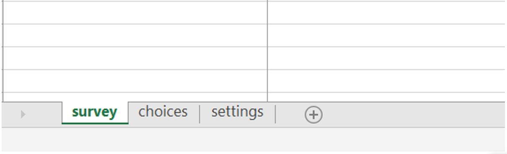
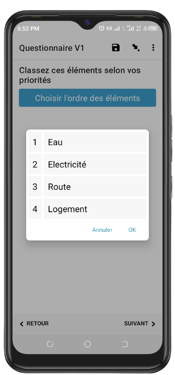
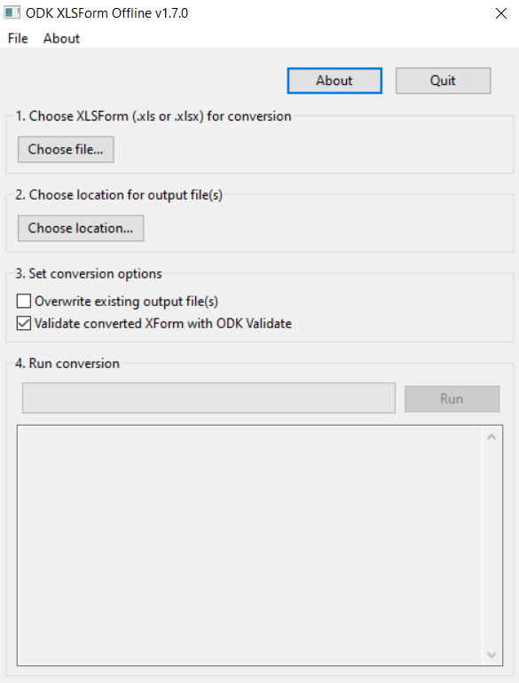
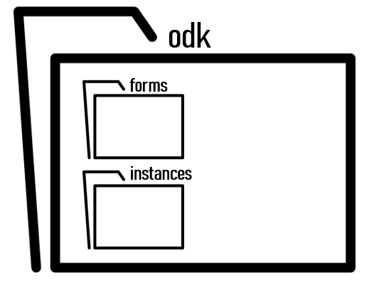

5 Conception du formulaire : partie 1
5.1 Conception du formulaire avec XLSForm
Dans ce chapitre, nous allons voir comment créer des formulaires en utilisant XLSForm avec Excel ou Google Sheet. ODK Build peut également être utilisé pour concevoir des formulaires, mais XLSForm présente beaucoup d’avantages tels que décrits ci-après :
Flexibilité : XLSForm permet une grande flexibilité dans la création des formulaires. En utilisant un tableur familier comme MS Excel ou Google Sheets, les utilisateurs peuvent rapidement et facilement créer des formulaires ODK complexes en y ajoutant des fonctionnalités avancées telles que des calculs, des conditions, des listes de choix et des contraintes.
Contrôle : En utilisant XLSForm, les utilisateurs ont un contrôle complet sur la conception du formulaire et peuvent personnaliser chaque aspect du formulaire afin qu’il réponde exactement à leurs besoins spécifiques.
Rapidité : Avec XLSForm, la création de formulaires est rapide. Les utilisateurs peuvent facilement copier et coller les contenus et les paramètres à travers le tableur, ce qui signifie que vous pouvez rapidement construire des formulaires complexes et les déployer rapidement.
5.2 Les feuilles
La création du formulaire commence par la création d’un classeur. Une fois le classeur créé, il faut y ajouter trois feuilles. Les trois feuilles doivent être nommées respectivement survey, choices et settings comme le montre la figure suivante.

5.2.1 survey
Cette feuille de calcul donne à votre formulaire sa structure globale et contient la majeure partie du contenu du formulaire. Il contient la liste complète des questions et des informations sur la façon dont elles doivent apparaître dans le formulaire. Chaque ligne représente généralement une question.
Cette feuille comporte 3 colonnes obligatoires : type, name et label.
type: spécifie le type de variable que vous attendez pour la question.name: spécifie le nom de variable unique pour cette entrée. Deux entrées ne peuvent pas avoir le même nom. Les noms doivent commencer par une lettre ou un trait de soulignement. Les noms ne peuvent contenir que des lettres, des chiffres, des traits d’union, des traits de soulignement et des points. Les noms sont sensibles à la casse.label: contient le texte de la question qui s’affiche dans le formulaire.
5.2.2 choices
Cette feuille de calcul est utilisée pour spécifier les catégories de réponse pour les questions à réponse unique et multiple. Chaque ligne représente une catégorie de réponse. Les catégories de réponse avec le même nom de liste (list_name) sont considérés comme faisant partie d’un ensemble de choix connexe et apparaîtront ensemble pour une question. Cela permet également de réutiliser un ensemble de choix pour plusieurs questions (par exemple, des questions oui/non).
Cette feuille comporte également 3 colonnes obligatoires : list_name, name et label.
list_name: permet de regrouper un ensemble de catégorie de réponses liées, c’est-à-dire des catégories de réponses qui doivent apparaître ensemble sous une question,name: spécifie le code unique associé à chaque catégorie de réponse,label: affiche le choix de réponse exactement tel que vous souhaitez qu’il apparaisse sur le formulaire.
5.2.3 settings
C’est la feuille de paramètres qui permettent d’identifier de manière unique le formulaire et sa version actuelle. Nous recommandons de spécifier au moins les colonnes suivantes :
form_title: Le titre qui sera affiché par les outils qui listent ce formulaire,form_id: ID unique qui identifie ce formulaire pour les outils qui l’utilisent. Ce n’est peut-être pas contenir des espaces et doit commencer par une lettre ou un trait de soulignement. Utilisez un texte court et descriptif. Par exemple : enq_cond_vie.version: Le code de version unique qui identifie l’état actuel du formulaire. La convention courante consiste à utiliser un format tel que aaaammjjrr. Par exemple, 2023031501 est la 1ère révision du 15 mars 2023.instance_name: une expression qui sera utilisée pour représenter un formulaire rempli spécifique. Elle est composée des valeurs saisies dans le formulaire.
5.3 Type de variables XLSForm
XLSForm prend en charge un certain nombre de types de variables. Le type de variable permet d’indiquer la nature de la donnée que vous désirez collecter. Il peut s’agir d’une valeur numérique, du texte, d’une photo, d’une sig,ature, des coordonnées géographiques, etc. Ci-après nous verons les différents types de variables que vous pouvez entrer dans la colonne type de la feuille de calcul de survey de votre XLSForm :
- note
Permet de définir un texte libre à l’écran.
Peut être utilisé pour définir un titre ou une section.
| type | name | label |
|---|---|---|
| note | intro | QUESTIONNAIRE SUR LES CONDITIONS DE VIE DE MENAGES |
- integer/decimal
Type permettant de collecter une valeur entière/décimale.
| type | name | label |
|---|---|---|
| integer | age | Quel est votre âge ? |
| decimal | poids | Quel est le poids de votre enfant ? |
- text
Permet de collecter des données alphanumériques
| type | name | label |
|---|---|---|
| text | nom_cm | Quel est le nom du chef de ménage ? |
- date
Permet de collecter la date. Si nous avons besoin de nous limiter seulement au mois et à l’année, nous pouvons utiliser month-year. year permet de ne collecter que l’année. Pour l’heure, nous pouvons uliliser time et dateTime combine la date et l’heure.
| type | name | label |
|---|---|---|
| date | date | Quelle est la date du prochain rendez-vous ? |
- range
Permet de collecter une valeur numérique sur un glisseur. On peut préciser le minimum, le maximum et le pas dans la colonne `parameters` (start; end; step).
| type | name | label |
|---|---|---|
| range | cote | Quelle note attribuez-vous à ce service ? |
- rank
Permet de collecter une liste de valeurs ordonnées à partir d’une liste fournie. Cela donne la possibilité de classer des éléments selon un ordre donné.
| type | name | label |
|---|---|---|
| rank service_list | service | Classez ces éléménts selon vos priorités |

- select_one
Permet de collecter une valeur unique à partir d’une liste.
| type | name | label |
|---|---|---|
| select_one etude_list | niveau_etude | Quel est votre niveau d’étude ? |
- select_multiple
Permet de collecter plusieurs valeurs (réponses) à partir d’une liste.
| type | name | label |
|---|---|---|
| select_multiple reseau_list | reseau | Quels réseaux téléphoniques utilisez-vous ? |
- geopoint
Permet de collecter les coordonnées géographiques : latitude, longitude, altitude et la précision.
| type | name | label |
|---|---|---|
| geopoint | gps | Collectez les coordonnées géographiques |
- barcode
Permet de collecter les données contenues dans un QR code
| type | name | label |
|---|---|---|
| barcode | qr_code | Scannez le QR code |
- image
Permet de prendre une photo. Nous pouvons collecter une signature en mettant le mot signature sur la colonne appearance.
Il y a aussi les types audioet video qui permettent, comme leurs noms indiquent, de collecter un audio et une video.
| type | name | label |
|---|---|---|
| image | photo_menage | Capturez la photo du ménage |
- calculate
Permet d’effectuer un calcul. L’opération à effectuer doit être écrit dans la cellule entre la ligne calulate et la colonne calculation. La division peut être réalisée avec div.
| type | name | calculation |
|---|---|---|
| calculate | somme_enfants | ${nb_fille}+${nb_garcon} |
5.4 Les metadonnées
Ce sont des données collectées automatiquement en arrière-plan durant l’administration du formulaire. Pour les collecter, il suffit d’inclure ces diffénts mots dans la colonne type de la feuille survey
- start : date et heure du début de l’interview
- end : date et heure de la fin de l’interview
- today : date de la fin de l’interview
- deviceid : identifiant du téléphone
- username : le nom de l’utilisateur
- phonenumber : le numéro du téléphone
Notons username phonenumber doivent être préalablement founis par l’ulisateur dans les paramétres de l’application.
Pour ajouter les modalités aux variables, nous utilisons la feuille choices. Un exemple est donné ci-après :
| list_name | name | label |
|---|---|---|
| etude_list | 1 | Aucun niveau |
| etude_list | 2 | Primaire |
| etude_list | 3 | Secondaire |
| etude_list | 4 | Supérieur |
| reseau_list | Airtel | Airtel |
| reseau_list | Vodacom | Vodacom |
| reseau_list | Orange | Orange |
5.5 Déployer un formulaire en local
Le déploiement du formulaire en local consiste à convertir le formulaire XLSForm (.xls ou.xlsx) en fichier Xforms (.xml) et à le placer dans le répertoire ODK Collect sur le smartphone. En effet, le fichier XLSForm n’est pas lisible dans l’application ODK Collect. Pour que cette dernière reconnaisse le formulaire, il doit être converti en fichier Xforms grâce à l’application ODK XLSForm offline.
5.5.1 Convertir le fichier XLSForm en Xforms
Nous utilisons ODK XLSForm offline pour cette conversion. En voici les étapes :
Sous Choose XLSForm (.xls or .xlsx) for conversion, cliquez sur Choose file… pour choisir le fichier XLSForm à convertir,
Sous Choose location for output file(s), cliquez sur Choose location pour choisir l’emplacement du fichier de sortie (Xforms). Par défaut, ce fichier sera dans le même emplacement que le fichier XLSForm.
Sous Set conversion options, vous pouvez demander d’écraser le fichier résultat précédemment converti en cochant Overwrite existing output file(s). Vous pouvez aussi demander de valider le fichier Xforms avec ODK Validate.
Cliquez sur le bouton Run pour lancer la conversion.
Dans la partie inférieure de l’application, un message s’affiche pour signaler que le fichier Xforms(.xml) a été créé ou liste des erreurs rencontrées dans le formulaire lors de la tentative de conversion.

Une fois le fichier généré, nous pouvons le placé dans notre smartphone pour le tester.
5.5.2 Répertoire ODK
Pour exécuter le formulaire converti, il suffit de le mettre dans le répertoire ODK. L’emplacement approprié est :
Android/data/org.odk.collect.android/files/projects/nom_du_projet/
Dans ce repartoire, nous trouvons un certain nombre de sous-dossiers dont deux nous interesse particulièrement. Il s’agit de forms et instances.

forms : contient les formulaires
instances : contient les données collectées. Dans instances, chaque sous-dossier correspond à un enregistrement.
Placez votre formulaire dans le sous-dossier forms. Vous pouvez maintenant tester votre formulaire avec ODK Collect.